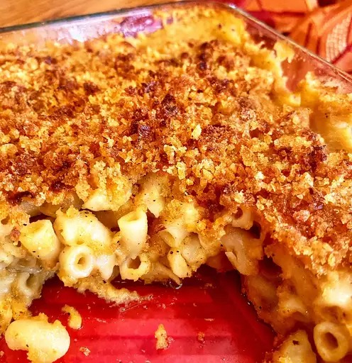

Mac and Cheese

Here we can see this amazing recipe in action as it is devoured by your loved ones.
Description
Here you will be taken on the simple, yet satisfying journey that is baking mac and cheese. You can use this to wow others at thanksgiving or just simply putting a smie on your loved one's face. This recipe will take a tolal of 10 minutes to prep and another 45 minutes to bake. It will make 4 servings so scale up the ingredients if youre looking to feed more that just 4 people.
Ingredients
- Macaroni
- Butter and Flour
- Milk
- Cheese
- Seasonings
- Breadcrumbs
- Boil the noodles:Boil the macaroni in salted water until the noodles are al dente. Drain and transfer to a prepared baking dish.
- Make the cheese sauce:Melt butter, then whisk in the flour. Whisk in the milk, bring to a simmer, and stir in the cheeses. Season with salt and pepper and continue simmering until the sauce is thick. Pour the sauce over the noodles and stir.
- Make the topping:Melt two tablespoons of butter in a skillet, add the bread crumbs, and toast until the crumbs are brown. Spread the topping over the macaroni and cheese, then sprinkle with paprika.
- Bake the mac and cheese:Bake in the preheated oven until the topping is golden brown.